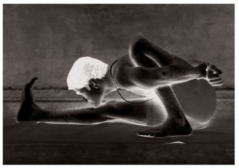
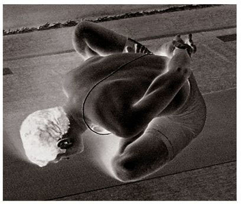

Janu Shirshasana, which some call Mahamudra, is of three types, each of which has twenty-two vinyasas. The 8th and 15th vinyasas are their states. Janu Shirshasana’s method for rechaka and puraka follows that of preceding asanas.
FOR ALL THE ASANAS, THE DETAILS OF THEIR BREATHING AND VINYASA methods, as well as of how to remain in their states in accordance with the vinyasa method, have to be learned from a Guru. Whatever my descriptions here, there will always be a difference in the actual method of a practice. For the convenience of the reader and aspirants, however, I have tried to be as descriptive as possible.
METHOD
For the 7th vinyasa of this asana, sit as in Paschimattanasana, stretch the left leg out, press the area between the anus and the organ of generation with the heel of the right foot, pulling the right knee back 90 , bend forward at the waist, take hold of the foot of the outstretched leg with both hands, tighten the anus and lower abdomen, straighten the back, lift the head fully, and do puraka. Next, doing rechaka slowly, place the forehead or chin on the knee of the outstretched leg, and do rechaka and puraka fully as much as possible; this is the 8th vinyasa. Then, doing puraka, lift up the head slowly; this is the 9th vinyasa. The next vinyasas follow those of preceding asanas. This asana is to be practiced for both the left and right sides.
MARICHYASANA (A)

MARICHYASANA (B)

While in the state of Janu Shirshasana (A), aspirants should not forget to do rechaka and puraka as deeply as possible. The reason I repeat this reminder so often is that the bodies of sadhakas will become as strong as diamonds through the practice of yoga. They should therefore not allow themselves to become indifferent, but should pursue their practices with faith and reverence.